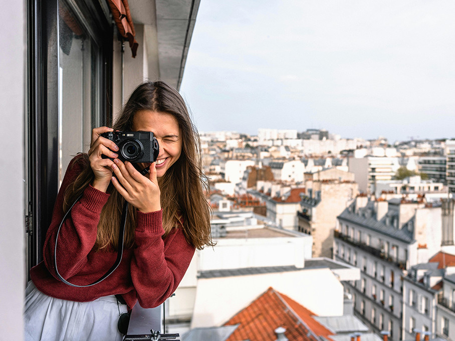

Sivuveikot - sivustosuunnittelua ja toteutusta jo vuoden 2025 helmikuusta!
Olemme yhteiskunnallinen yritys, jonka tavoitteena on tarjota työtä, toimeentuloa ja työkokemusta opiskelijoille, joita kiinnostaa työskentely ohjelmoinnin tai muun it-työn parissa. Suunnittelemme ja toteutamme verkkosivut kilpailukykyiseen hintaan ja asiakaslähtöisellä asenteella.
"Tilasin Sivuveikoilta verkkosivut jakaakseni valokuvaportfolioni. Halusin, että sivusto on responsiivinen ja skaalautuu eri näytöille hyvin. Oma vahvuuteni on enemmän valokuvauksessa ja sen teknisissä puolissa, joten Sivuveikkojen kaltainen edullinen vaihtoehto oli minulle toimiva. Olen itsekin opiskelija ja arvostin Sivuveikkojen opiskelijaläheistä toiminnan lähtökohtaa. Voin sydämellisesti suositella Sivuveikkoja kaikille jotka halauvat verkkosivut edullisesti ja nopeasti!" -Venla Valokuvaaja
